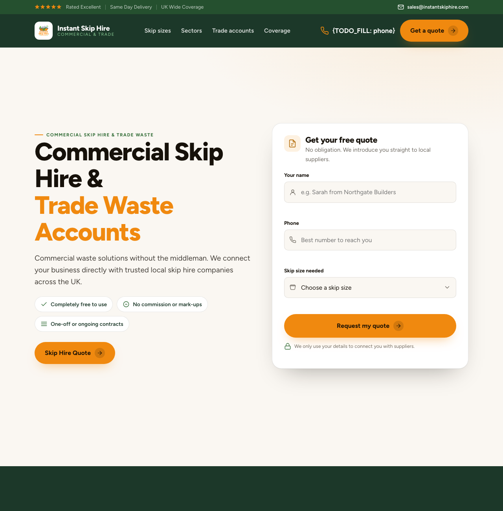

Make AI-generated UI distinctive, not generic.
uxskill is a design-intelligence engine for AI coding tools. It gives Cursor, Copilot, and Claude Code a real design system to build from instead of the same purple-gradient default.
Every AI coding tool converges on the same look.
Ask any assistant for a landing page and you get the same five tells within seconds: Inter, a purple-to-blue gradient, three identical cards, soft shadows, a centered hero. It is recognizable because it is the statistical average of everything the model has seen. That average has a name: AI design slop.
The centroid
What the model reaches for by default.
Brand-true, rich, enforced
A design system compiled from your brand and real data.
Four steps, one deterministic engine.
You point uxskill at your brand and your brief. A pure-Python engine does the rest in milliseconds, then refuses to let slop ship. No model in the loop, so the same input always produces the same system.
Extract the brand
Color comes from the logo pixels, not the most-painted CSS. Type comes from the letterform. The result is a portable brand file.
Synthesize a system
A 7-axis compiler turns the brief into a real design language: palette, type pair, spacing, radius, and motion. Distilled from data, not a template.
Build the page
A full page-level sequence expands: hero, problem, proof, before/after, install, footer. Rich and complete, with real imagery, never a hero and three cards.
Gates enforce
The anti-slop linter, a brand-fidelity hard floor, and the responsive gates run on the output. Off-brand drift and broken-on-mobile fail the build.
One call. A whole system back.
This is the actual engine API. Hand it a brief, get a complete, deterministic design system in return, ready for the build step.
dict → dict, no I/O# the engine is pure Python, fully offline from engine.recommender import recommend, Brief system = recommend(Brief( industry="fintech-neobank", tone=["warm", "editorial"], must_have=["dark-mode"], forbidden=["purple-gradients"], )) print(system.style["id"], system.palette["colors"]["primary"]) # -> monochrome-precise #2383e2 # same brief -> same bytes / no LLM called
The intelligence is structured data, not a black box.
Every recommendation is built from manifests you can read and a test suite you can run. These are live counts from the engine, not marketing figures.
Anti-slop linter
152 deterministic regex rules catch the fingerprints: purple gradients, three-card rows, placeholder names, missing alt text. Runs in CI, exits non-zero on the bad ones.
this page: exit 0, cleanBrand-fidelity floor
A hard floor checks the output uses your primary color, carries your logo, and matches your type, with no house-style drift. Off-brand output fails, regardless of how pretty it is.
this page: passed, on-brandResponsive gates
Mobile-first by construction. No horizontal scroll at 360 and 390px, no wrapping wordmark or nav, sticky chrome kept under one bar. The phone is the canvas, not an afterthought.
this page: 360 and 390, no overflowWe pointed it at a real skip-hire site.
Instant Skip Hire had a working page and a clear brand: an amber logo, a green theme, plain trade-facing copy. The unconstrained version of this test shipped Claude's clay color, an editorial serif, and a dropped form. uxskill kept the amber, kept the human copy, and put the quote form back where it belongs.
management journey

Three ways in. Pick your environment.
The same engine ships as an npx wrapper, a Python package, and a Claude Code plugin. No accounts, no API key, no setup beyond one line.
$ npx uxskill init
Bootstraps the engine through pipx on first run. Best for a quick try without touching your Python setup.
> /plugin marketplace add Laith0003/ux-skill
> /plugin install ux@ux-skill
Wires every slash command and sub-agent into your session. Then run /ux-init.
$ pip install uxskill
The full engine for Cursor, Windsurf, CI, or the CLI. Exposes both ux and uxskill.
Give your AI a designer it cannot argue with.
Free, MIT-licensed, and offline. Install it in one line and the next page your assistant builds will look like your product, not like every other product.